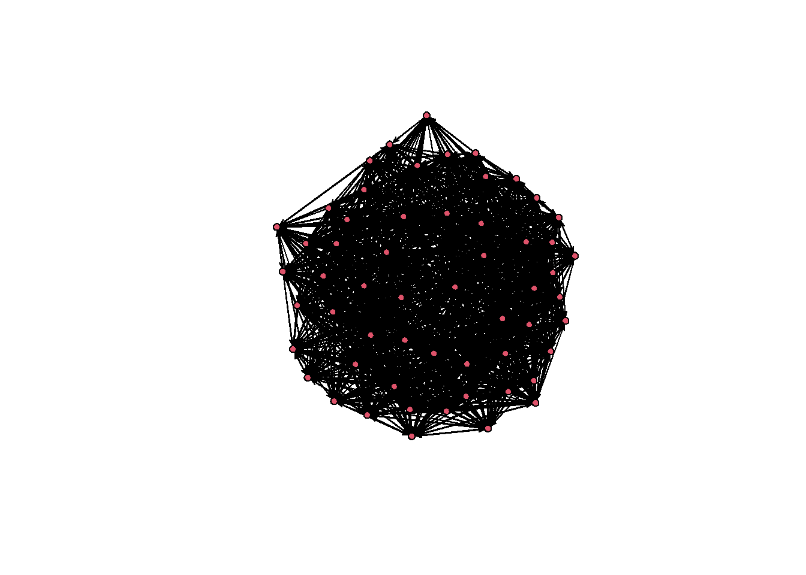
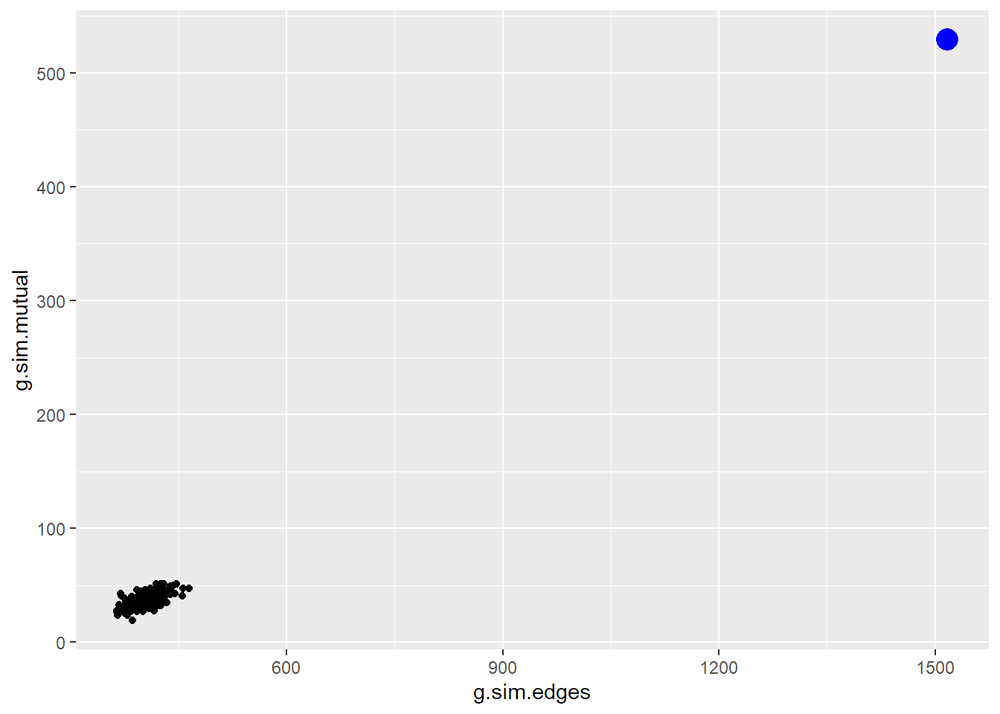
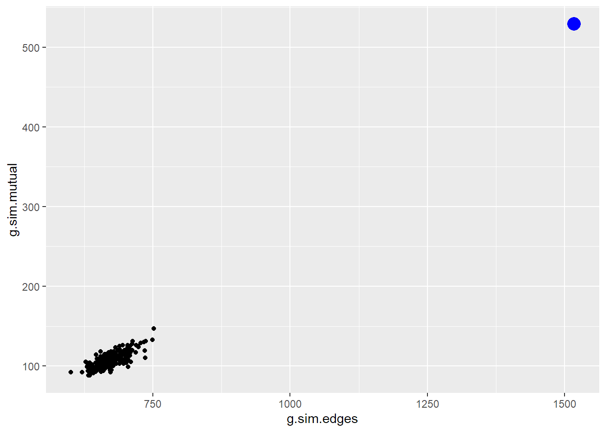
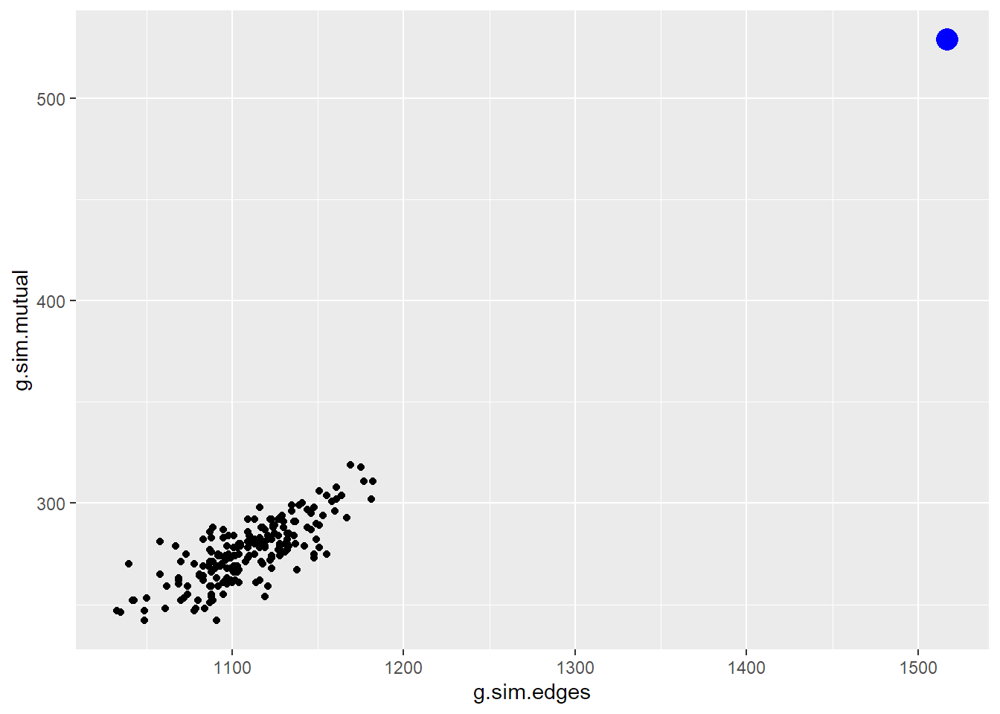
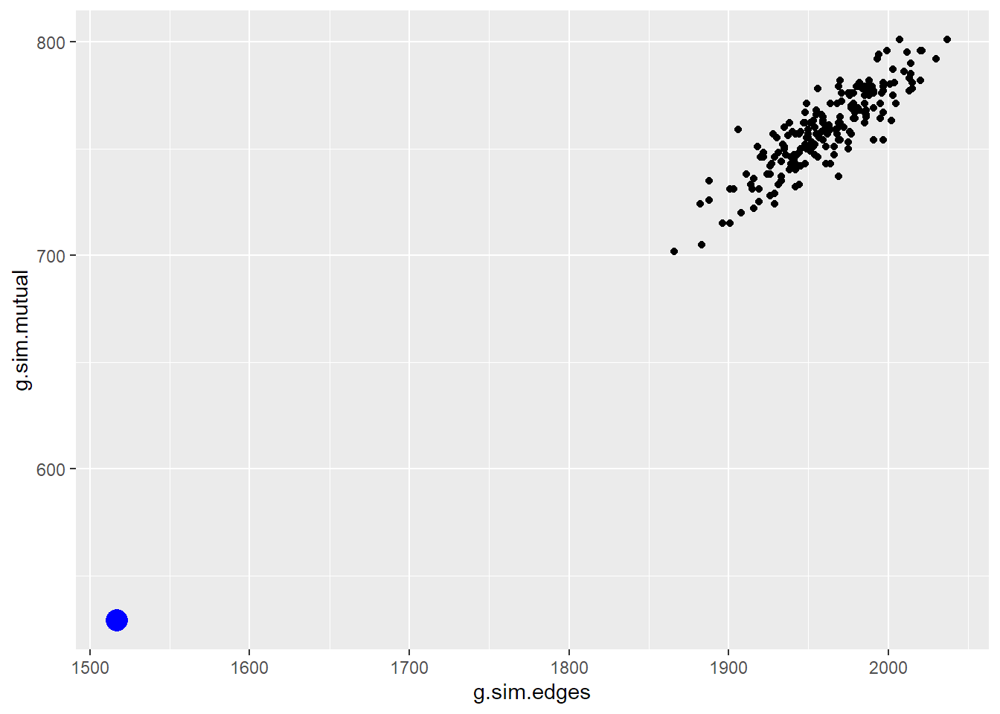
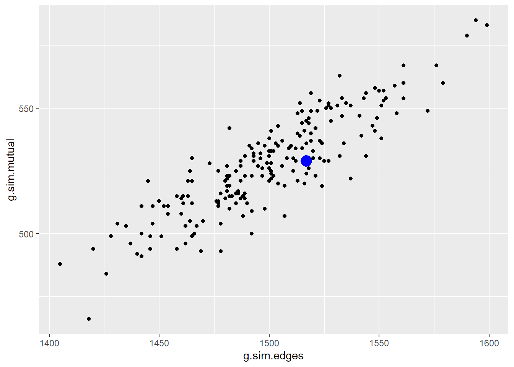

![]()
library(statnet)
library(ggplot2)Where do ERGM Parameter Values Come From?
This short blog post will give some intuition behind the coefficient values that are estimated when you run an ERGM.
Load some libraries
Let’s first load our libraries.
Create Simulated Data
Now, let’s suppose we go out in the world and we collect some network data. Ultimately we want to model the data to get a better sense of the processes that may be at work in determining the ties. Rather than actually collecting data, let’s play god for a minute and simulate some data. The benefit of this, for our purposes, is that we know the true data generating process and so know the true coefficient values that generated our observed data. We will call this g.true.
set.seed(181318)
g.true <- simulate(network(57) ~ edges + mutual, coef=c(-1, 2), nsim = 1)
summary(g.true ~ edges + mutual) edges mutual
1517 529 Based on this data we created, the observed number of edges is 1517 and there are 529 mutual ties. Let’s save these values and plot the data.
true.edges = summary(g.true ~ edges)
true.mutual = summary(g.true ~ mutual)
plot(g.true)
Identify the True Parameter Values
Now will assume we don’t know these coefficient values used to simulate the data.We will therefore proceed by simulating a bunch of networks with different values to try and hone in on the correct coefficients. This may have you asking, well, how do we know we have obtained the “correct” coefficients. If you have a taken a course on maximum likelihood, you know that in a nutshell, you are searching for the parameter values that make the data you observed the most probably, given your model. We will do the same thing here with our network data.
As we saw above, we have variables that generated our data and hopefully our theory correctly guided us to use include them in our model. With ERGMs, we are attempted to reproduce a set of target statistics. Given our model with an edge term and a mutual term, we would like our model to produce data (i.e., simulate data) that make our observed statistics on these terms the most probable.
O.k., lets see this in action. So now let’s assume we don’t know the true model that generated g.true network. So we don’t know the coefficients, but we have the observed data and we know how many edges and mutual ties there are in our data.
Again, let’s also assume we have some theory which (correctly) tells us that the two key processes that built up by our data can be captured by the following ergm terms: edges and mutual. Thus, our nodes have some underlying tendency to want to form ties (this is our edge term) and also a tendency to want to form mutual ties.
So now we need to explore possible values for our coefficients. Obviously, there are algorithms operating under the hood of the ergm function that do this much more efficiently, but to give you some intuitiion, we will just try out some values until we find what look like good estimates.
Let’s try -2 and .5. And given those values, we will simulate 200 different networks that could be derived given those coefficients.
g.sim <- simulate(network(57) ~ edges + mutual, coef =c(-2, .5), nsim = 200, sequential = FALSE)And just out of curiosity we can take a look at the summary statistics for just the first simulated network.
summary(g.sim[[1]] ~ edges + mutual) edges mutual
390 38 Here, we can see we are way off of the true values. We are only producing 390 edges and only 38 mutuals. And while this is only 1 of our simulated networks, we suspect that these are likely not the correct coefficients as they are unlikely to have created our true network. To provide more insight into this and use all of our simulated data, let’s grab the count of edges and mutuals for all simulated networks and plot that distribution against the values we found in our true network. I’ll plot the true values in blue.
g.sim.edges = vector()
for (i in 1:200)
g.sim.edges[i] = summary(g.sim[[i]] ~ edges)
g.sim.mutual = vector()
for (i in 1:200)
g.sim.mutual[i] = summary(g.sim[[i]] ~ mutual)
g.sim.data = as.data.frame(cbind(g.sim.edges, g.sim.mutual))
ggplot(g.sim.data, aes(x = g.sim.edges, y = g.sim.mutual)) + geom_point() +
geom_point(aes(x=true.edges, y=true.mutual), colour="blue", size = 5)
Note, the additional geom_point is to plot the location of our observed data, which had 1517 edges and 529 mutual ties.
When we plot the number of edges versus mutual ties for all of the networks simulated from this model we see that our observed data, is nowhere near that distribution. It is unlikely we would ever observe our data if these were in fact the correct parameters.
So what happends now, is that we need to update our parameter and because we underestimated the number of edges and mutuals, let’s increase these values. And repeate the process.
g.sim2 <- simulate(network(57) ~ edges + mutual, coef =c(-1.5, .75), nsim = 200, sequential = FALSE)
g.sim.edges = vector()
for (i in 1:200)
g.sim.edges[i] = summary(g.sim2[[i]] ~ edges)
g.sim.mutual = vector()
for (i in 1:200)
g.sim.mutual[i] = summary(g.sim2[[i]] ~ mutual)
g.sim.data = as.data.frame(cbind(g.sim.edges, g.sim.mutual))
ggplot(g.sim.data, aes(x = g.sim.edges, y = g.sim.mutual)) + geom_point() +
geom_point(aes(x=true.edges, y=true.mutual), colour="blue", size = 5)
Still not great. Let’s increase our parameter values again.
g.sim3 <- simulate(network(57) ~ edges + mutual, coef =c(-1, 1), nsim = 200, sequential = FALSE)
g.sim.edges = vector()
for (i in 1:200)
g.sim.edges[i] = summary(g.sim3[[i]] ~ edges)
g.sim.mutual = vector()
for (i in 1:200)
g.sim.mutual[i] = summary(g.sim3[[i]] ~ mutual)
g.sim.data = as.data.frame(cbind(g.sim.edges, g.sim.mutual))
ggplot(g.sim.data, aes(x = g.sim.edges, y = g.sim.mutual)) + geom_point() +
geom_point(aes(x=true.edges, y=true.mutual), colour="blue", size = 5)
This is better. Let’s try to improve.
g.sim4 <- simulate(network(57) ~ edges + mutual, coef =c(-.5, 2), nsim = 200, sequential = FALSE)
g.sim.edges = vector()
for (i in 1:200)
g.sim.edges[i] = summary(g.sim4[[i]] ~ edges)
g.sim.mutual = vector()
for (i in 1:200)
g.sim.mutual[i] = summary(g.sim4[[i]] ~ mutual)
g.sim.data = as.data.frame(cbind(g.sim.edges, g.sim.mutual))
ggplot(g.sim.data, aes(x = g.sim.edges, y = g.sim.mutual)) + geom_point() +
geom_point(aes(x=true.edges, y=true.mutual), colour="blue", size = 5)
Now we overshot the observed number of edges and mutuals. Lets decrease those coefficients.
g.sim5 <- simulate(network(57) ~ edges + mutual, coef =c(-1, 2), nsim = 200, sequential = FALSE)
summary(g.sim5[[15]] ~ edges + mutual) edges mutual
1551 551 g.sim.edges = vector()
for (i in 1:200)
g.sim.edges[i] = summary(g.sim5[[i]] ~ edges)
g.sim.mutual = vector()
for (i in 1:200)
g.sim.mutual[i] = summary(g.sim5[[i]] ~ mutual)
g.sim.data = as.data.frame(cbind(g.sim.edges, g.sim.mutual))
ggplot(g.sim.data, aes(x = g.sim.edges, y = g.sim.mutual)) + geom_point() +
geom_point(aes(x=true.edges, y=true.mutual), colour="blue", size = 5)
So we can see that when we get the coefficients right, in this case those that match the true data generating process, we simulate networks that make our observed network central in that distribution of the simulated networks.
Summary
To summarize Koskinen and Snijders (2013): What we are doing to solve the likelihood equation is we choose a value of theta, simulate graphs x1, x2,..xm, calculate from that sample of graphs of the mean of the statistics of interest (here we are looking at edges and mutual), and then check whether the estimated mean from the simulated graphs is equal to the observed value of those statistics. If the difference is not zero, we then choose another value of theta and repeat the process. This is done until we find value for which the estimated mean of our statistics from the simulated graphs equals our observed values for those statistics. This is the MLE. Note, a brute force approach such as attempted above, is not very efficient. Statnet has built in algorithms that make the search process much more efficient. But the idea is the same.